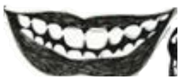
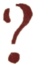
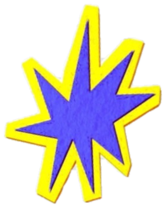
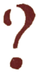
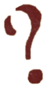
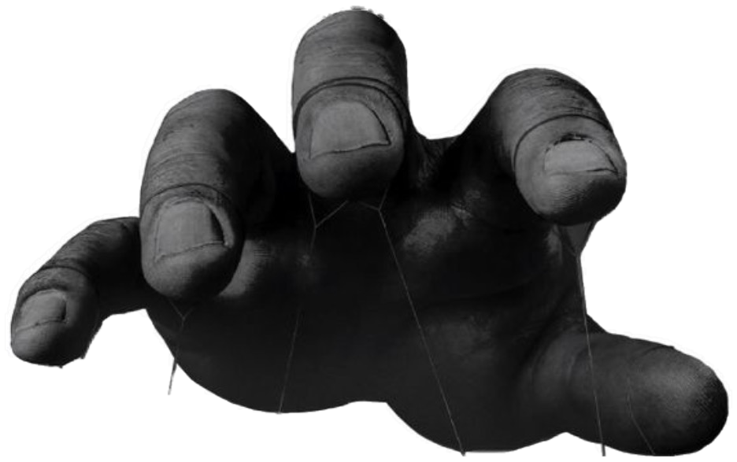
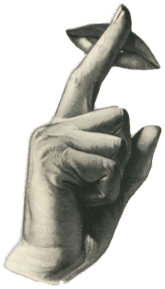
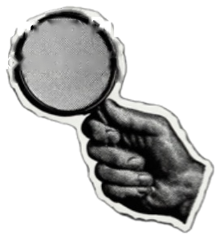
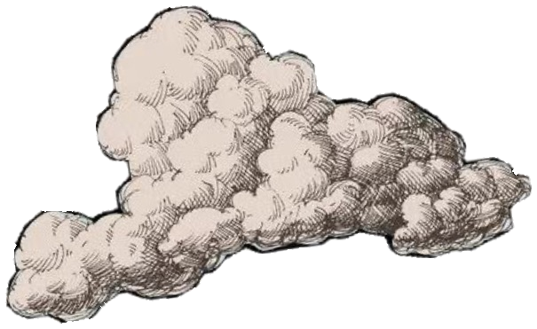
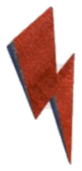
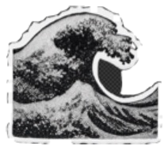
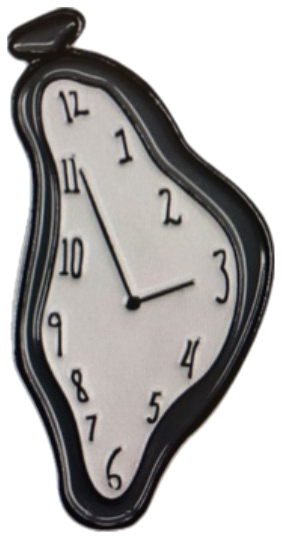
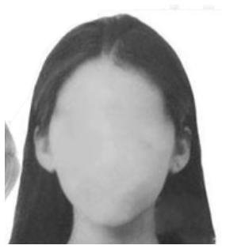
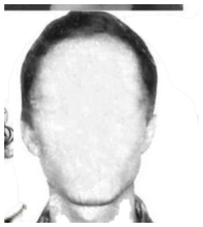
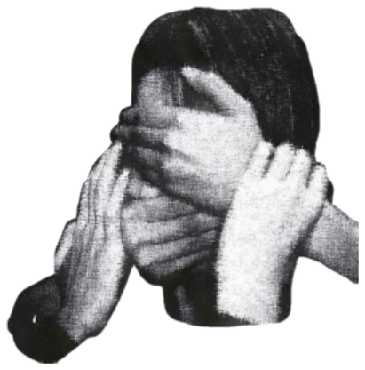
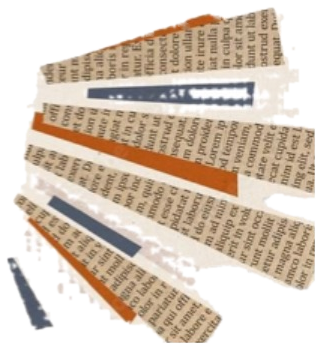
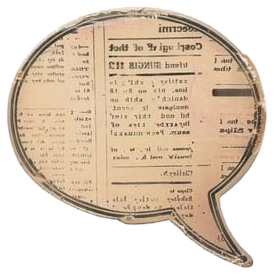
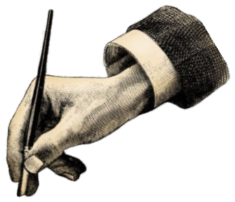
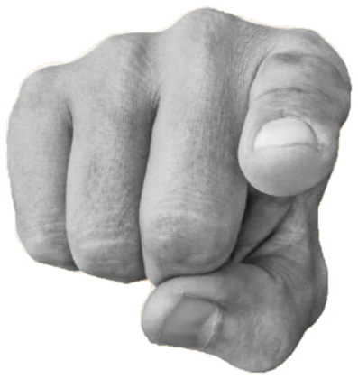
Você já reparou
que quanto mais
você tenta
se explicar
em uma briga,
mais a outra pessoa
explode?
Você passa o dia
pisando
em ovos,
e mesmo assim,
um simples
tom de voz
vira uma
tempestade
de três horas.
O erro não é
falta de amor.
É tentar apagar um
incêndio
emocional
jogando a
gasolina
das suas justificativas.
Protocolo
7 dias
te dá o script exato
para desarmar a crise
em minutos,
sem briga e sem culpa.
Clique no botão abaixo
e proteja a sua
paz
hoje mesmo.